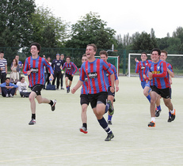
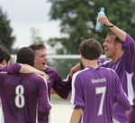
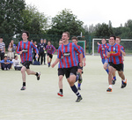
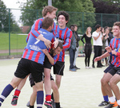
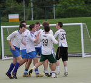
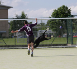
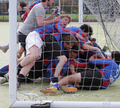
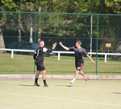

College Cup
College Cup 2012 Review
With College Cup 2012 now concluded, Luke Gardener and Dan Holland pick their highlights from the last eight weeks of action
Wentworth dismantle Vanbrugh to clinch Plate victory
The Plate final concluded this year’s College Cup, with Wentworth seconds producing a superb performance to beat Vanbrugh thirds 3-1
Penalty drama seals Cup win for Vanbrugh
Vanbrugh were crowned College Cup champions after they prevailed over Halifax in a dramatic penalty shootout
College Cup Final: As it happened
Join the Nouse Sport team on the sidelines for the College Cup 2012 Final. Kick off at 3pm
Beadle jubilant as Halifax book their place in the College Cup final
In the second semi final of the College Cup 2012, Halifax narrowly defeated James to ensure they would have a chance to defend their title against Vanbrugh in the final
Langwith suffer penalty heartache to send Wentworth through
Despite not enjoying the best of the game, Wentworth seconds edged their way into the Plate final after producing an almost perfect set of penalties against Langwith firsts
Wilson the hero as Vanbrugh win in shootout drama
Vanbrugh captain James Wilson saved three and scored one, as Vanbrugh prevailed over Derwent in a dramatic penalty shootout to book their place in the College Cup Final
College Cup Semi Finals Preview
Dan Holland and Luke Gardener look ahead to this week’s two heavyweight College Cup semi final matches
| Team | Pl. | W | D | L | F | A | GD | Pts. |
|---|---|---|---|---|---|---|---|---|
| Derwent 1sts | 5 | 4 | 0 | 1 | 10 | 3 | +7 | 12 |
| Halifax 3rds | 5 | 3 | 0 | 2 | 5 | 6 | -1 | 9 |
| Goodricke 2nds | 5 | 2 | 2 | 1 | 7 | 5 | +2 | 8 |
| Wentworth 1sts | 5 | 1 | 2 | 2 | 9 | 9 | 0 | 5 |
| Langwith 2nds | 5 | 1 | 1 | 3 | 7 | 9 | -2 | 4 |
| James 3rds | 5 | 1 | 1 | 3 | 5 | 11 | -6 | 4 |
Fixtures
Week 3
- Monday 7th May
- 2pm: Wentworth 1sts v Halifax 3rds
- 3pm: Goodricke 2ndss v James 3rds
- 4pm: Derwent 1sts v Langwith 2nds
- Tuesday 8th May
- 2pm: Halifax 4ths v Vanbrugh 2nds
- 3pm: Wentworth 2nds v Goodricke 3rds
- 4pm: James 1sts v Alcuin 1sts
- Thursday 10th May
- 2pm: Halifax 1sts v James 2nds
- 3pm: Derwent 2nds v Vanbrugh 3rds
- 4pm: Goodricke 1sts v Alcuin 3rds
- Friday 11th May
- 2pm: Halifax 2nds v Wentworth 3rds
- 3pm: Alcuin 2nds v Langwith 1sts
- 4pm: Vanbrugh 1sts v Derwent 3rds
Week 4
- Monday 14th May
- 2pm: Langwith 1sts v Vanbrugh 1sts
- 3pm: Derwent 3rds v Wentworth 3rds
- 4pm: Halifax 2nds v Alcuin 2nds
- Tuesday 15th May
- 2pm: Derwent 1sts v Goodricke 2nds
- 3pm: Langwith 2nds v Wentworth 1sts
- 4pm: Halifax 3rds v James 3rds
- Thursday 17th May
- 2pm: Wentworth 2nds v James 1sts
- 3pm: Alcuin 1sts v Halifax 4ths
- 4pm: Vanbrugh 2nds v Goodricke 3rds
- Friday 18th May
- 2pm: Derwent 2nds v Goodricke 1sts
- 3pm: James 2nds v Vanbrugh 3rds
- 4pm: Halifax 1sts v Alcuin 3rds
Week 5
- Monday 21st May
- 2pm: Alcuin 3rds v Vanbrugh 3rds
- 3pm: Goodricke 1sts v Halifax 1sts
- 4pm: James 2nds v Derwent 2nds
- Tuesday 22nd May
- 2pm: Derwent 3rds v Alcuin 2nds
- 3pm: Wentworth 3rds v Vanbrugh 1sts
- 4pm: Langwith 1sts v Halifax 2nds
- Thursday 24th May
- 2pm: Goodricke 2nds v Wentworth 1sts
- 3pm: Derwetn 1sts v James 3rds
- 4pm: Halifax 3rds v Langwith 2nds
- Friday 25th May
- 2pm: Wentworth 2nds v Vanbrugh 2nds
- 3pm: Goodricke 3rds v Alcuin 1sts
- 4pm: Halifax 4ths v James 1sts
Week 6
- Monday 28th May
- 2pm: James 1sts v Goodricke 3rds
- 3pm: Wentworth 2nds v Halifax 4ths
- 4pm: Alcuin 1sts v Vanbrugh 2nds
- Tuesday 29th May
- 2pm: Halifax 1sts v Derwent 2nds
- 3pm: James 2nds v Alcuin 3rds
- 4pm: Goodricke 1sts v Vanbrugh 3rds
- Thursday 31st May
- 2pm: Langwith 1sts v Wentworth 3rds
- 3pm: Vanbrugh 1sts v Alcuin 2nds
- 4pm: Derwent 3rds v Halifax 2nds
- Friday 1st June
- 2pm: Halifax 3rds v Goodricke 2nds
- 3pm: Derwent 1sts v Wentworth 1sts
- 4pm: Langwith 2nds v James 3rds
Week 7
- Monday 4th June
- 2pm: Wentworth 1sts v James 3rds
- 3pm: Goodricke 2nds v Langwith 2nds
- 4pm: Derwent 1sts v Halifax 3rds
- Tuesday 5th June
- 2pm: Alcuin 1sts v Wentworth 2nds
- 3pm: James 1sts v Vanbrugh 2nds
- 4pm: Halifax 4ths v Goodricke 3rds
- Thursday 7th June
- 2pm: Vanbrugh 3rds v Halifax 1sts
- 3pm: Derwent 2nds v Alcuin 3rds
- 4pm: Goodricke 1sts v James 2nds
- Friday 8th June
- 2pm: Vanbrugh 1sts v Halifax 2nds
- 3pm: Langwith 1sts v Derwent 3rds
- 4pm: Alcuin 2nds v Wentworth 3rds
Fantasy Football 2012
It's back.
Time to compare goal-to-game ratios, re-ignite those eternal 25-goal poacher vs. tall target man debates and lose sleep over the merits of the midfield diamond.